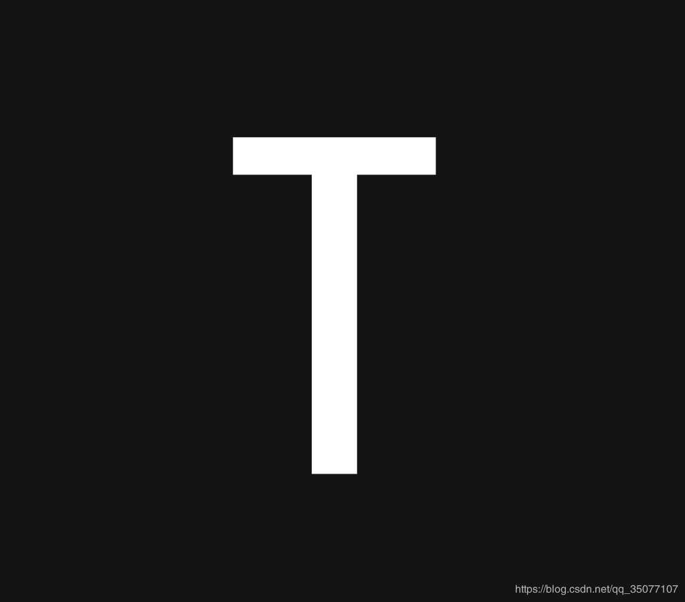
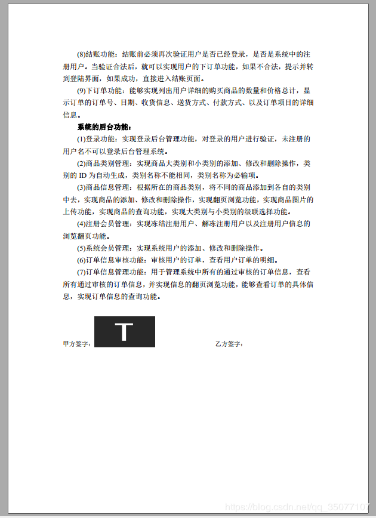

使用java开源itext库对pdf进行操作，分主要分两步先查找指定文字位置，然后再在指定位置插入图片。
1.查找指定文字的坐标位置
这里主要通过实现类RenderListener来完成查找坐标位置
代码如下：
package com.anyu.PDFUtils;
import java.io.FileInputStream;
import java.io.IOException;
import java.util.ArrayList;
import com.itextpdf.awt.geom.Rectangle2D.Float;
import com.itextpdf.text.Rectangle;
import com.itextpdf.text.pdf.PdfDictionary;
import com.itextpdf.text.pdf.PdfName;
import com.itextpdf.text.pdf.PdfReader;
import com.itextpdf.text.pdf.parser.ContentByteUtils;
import com.itextpdf.text.pdf.parser.ImageRenderInfo;
import com.itextpdf.text.pdf.parser.PdfContentStreamProcessor;
import com.itextpdf.text.pdf.parser.RenderListener;
import com.itextpdf.text.pdf.parser.TextRenderInfo;
public class PdfKeywordFinder {
public static void main(String[] args) throws IOException {
String keyword = "甲方签字：";
List<float[]> positions = findKeywordPostions("E:\\Desktop\\pdftest.pdf", keyword);
System.out.println("total:" + positions.size());
if (positions != null && positions.size() > 0) {
for (float[] position : positions) {
System.out.print("pageNum: " + (int) position[0]);
System.out.print("\tx: " + position[1]);
System.out.println("\ty: " + position[2]);
System.out.println("\tcharWidth:" + position[3]);//每个字符的宽度
* @description: 查找插入签名图片的最终位置，因为是插入签名图片，所以之前的关键字应只会出现一次
* 这里直接使用了第一次查找到关键字的位置，并返回该关键字之后的坐标位置
* @return: float[0]:页码，float[1]:最后一个字的x坐标，float[2]:最后一个字的y坐标
public static float[] getAddImagePositionXY(String pdfName, String keyword) throws IOException {
float[] temp = new float[3];
List<float[]> positions = PdfKeywordFinder.findKeywordPostions(pdfName, keyword);
// PdfReader pdfReader = new PdfReader(pdfName);
// Rectangle pageSize = pdfReader.getPageSize(1);
// temp[0]=positions.get(0)[0];
// temp[1]=positions.get(0)[1]*pageSize.getWidth();
// temp[2]=positions.get(0)[2]*pageSize.getHeight();
temp[0] = positions.get(0)[0];
temp[1] = positions.get(0)[1] + (keyword.length() * positions.get(0)[3]);
temp[2] = positions.get(0)[2] - positions.get(0)[3];
* @return List<float [ ]> : float[0]:pageNum float[1]:x float[2]:y
public static List<float[]> findKeywordPostions(String pdfName, String keyword) throws IOException {
File pdfFile = new File(pdfName);
byte[] pdfData = new byte[(int) pdfFile.length()];
FileInputStream inputStream = new FileInputStream(pdfFile);
//从输入流中读取pdfData.length个字节到字节数组中，返回读入缓冲区的总字节数，若到达文件末尾，则返回-1
inputStream.read(pdfData);
List<float[]> result = new ArrayList<>();
List<PdfPageContentPositions> pdfPageContentPositions = getPdfContentPostionsList(pdfData);
for (PdfPageContentPositions pdfPageContentPosition : pdfPageContentPositions) {
List<float[]> charPositions = findPositions(keyword, pdfPageContentPosition);
if (charPositions == null || charPositions.size() < 1) {
result.addAll(charPositions);
private static List<PdfPageContentPositions> getPdfContentPostionsList(byte[] pdfData) throws IOException {
PdfReader reader = new PdfReader(pdfData);
List<PdfPageContentPositions> result = new ArrayList<>();
int pages = reader.getNumberOfPages();
for (int pageNum = 1; pageNum <= pages; pageNum++) {
float width = reader.getPageSize(pageNum).getWidth();
float height = reader.getPageSize(pageNum).getHeight();
PdfRenderListener pdfRenderListener = new PdfRenderListener(pageNum, width, height);
PdfContentStreamProcessor processor = new PdfContentStreamProcessor(pdfRenderListener);
PdfDictionary pageDic = reader.getPageN(pageNum);
PdfDictionary resourcesDic = pageDic.getAsDict(PdfName.RESOURCES);
processor.processContent(ContentByteUtils.getContentBytesForPage(reader, pageNum), resourcesDic);
} catch (IOException e) {
String content = pdfRenderListener.getContent();
List<CharPosition> charPositions = pdfRenderListener.getcharPositions();
List<float[]> positionsList = new ArrayList<>();
for (CharPosition charPosition : charPositions) {
float[] positions = new float[]{charPosition.getPageNum(), charPosition.getX(), charPosition.getY(), charPosition.getCharWidth()};
positionsList.add(positions);
PdfPageContentPositions pdfPageContentPositions = new PdfPageContentPositions();
pdfPageContentPositions.setContent(content);
pdfPageContentPositions.setPostions(positionsList);
result.add(pdfPageContentPositions);
private static List<float[]> findPositions(String keyword, PdfPageContentPositions pdfPageContentPositions) {
List<float[]> result = new ArrayList<>();
String content = pdfPageContentPositions.getContent();
List<float[]> charPositions = pdfPageContentPositions.getPositions();
for (int pos = 0; pos < content.length(); ) {
int positionIndex = content.indexOf(keyword, pos);
if (positionIndex == -1) {
float[] postions = charPositions.get(positionIndex);
private static class PdfPageContentPositions {
private List<float[]> positions;
public String getContent() {
public void setContent(String content) {
public List<float[]> getPositions() {
public void setPostions(List<float[]> positions) {
this.positions = positions;
private static class PdfRenderListener implements RenderListener {
private float pageHeight;
private StringBuilder contentBuilder = new StringBuilder();
private List<CharPosition> charPositions = new ArrayList<>();
public PdfRenderListener(int pageNum, float pageWidth, float pageHeight) {
this.pageWidth = pageWidth;
this.pageHeight = pageHeight;
public void beginTextBlock() {
public void renderText(TextRenderInfo renderInfo) {
List<TextRenderInfo> characterRenderInfos = renderInfo.getCharacterRenderInfos();
for (TextRenderInfo textRenderInfo : characterRenderInfos) {
String word = textRenderInfo.getText();
word = word.substring(word.length() - 1, word.length());
Float rectangle = textRenderInfo.getAscentLine().getBoundingRectange();
float x = (float) rectangle.getMinX();
float y = (float) rectangle.getMinY();
float charWidth = (float) (rectangle.getMaxX() - rectangle.getMinX());
float xPercent = Math.round(x / pageWidth * 10000) / 10000f;
float yPercent = Math.round((1 - y / pageHeight) * 10000) / 10000f;
CharPosition charPosition = new CharPosition(pageNum, x, y, charWidth);
charPositions.add(charPosition);
contentBuilder.append(word);
public void endTextBlock() {
public void renderImage(ImageRenderInfo renderInfo) {
public String getContent() {
return contentBuilder.toString();
public List<CharPosition> getcharPositions() {
private static class CharPosition {
private float charWidth = 0;//单个文字的宽度
public CharPosition(int pageNum, float x, float y, float charWidth) {
this.charWidth = charWidth;
public int getPageNum() {
public float getCharWidth() {
public String toString() {
return "[pageNum=" + this.pageNum + ",x=" + this.x + ",y=" + this.y + "]";
复制
参考：Java 在pdf中通过关键字定位
2.在查找到的坐标位置插入图片
import com.anyu.PDFUtils.PdfKeywordFinder;
import com.itextpdf.text.*;
import com.itextpdf.text.pdf.PdfContentByte;
import com.itextpdf.text.pdf.PdfReader;
import com.itextpdf.text.pdf.PdfStamper;
import com.itextpdf.text.pdf.PdfWriter;
import java.io.FileOutputStream;
import java.io.IOException;
* @date ：2019/10/20 15:10
public class PDFImageTest1 {
public static void main(String[] args) throws IOException, DocumentException {
String pdfname="E:\\Desktop\\pdftest.pdf";
float[] position= PdfKeywordFinder.getAddImagePositionXY(pdfname,"甲方签字：");
//Read file using PdfReader
PdfReader pdfReader = new PdfReader(pdfname);
System.out.println("x:"+position[1]+" y:"+position[2]);
// float pageNum=positions.get(0)[0];
// float x=positions.get(0)[1];
// float y=positions.get(0)[2];
// float charWidth=positions.get(0)[3];
// System.out.println(Arrays.toString(positions.get(0)));
// float temp[]=PdfKeywordFinder.getKeywordPositionXY(pdfname,"甲方签字");
// for(int i=0;i<temp.length;i++){
// System.out.println(temp[i]);
//Modify file using PdfReader
PdfStamper pdfStamper = new PdfStamper(pdfReader, new FileOutputStream("E:\\Desktop\\modified.pdf"));
Image image = Image.getInstance("E:\\Desktop\\SignaturePicture\\testlogo.jpg");
image.scaleAbsolute(100, 50);
//Scale to new height and new width of image
image.setAbsolutePosition(position[1], position[2]);
System.out.println("pages:"+pdfReader.getNumberOfPages());
PdfContentByte content = pdfStamper.getUnderContent((int) position[0]);
参考：使用iText库创建PDF文件
测试结果：
关键字（keyword）：“甲方签名：”
插入图片：

插入结果：

查找位置的另一种参考：
java提取PDF文字坐标